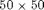
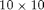
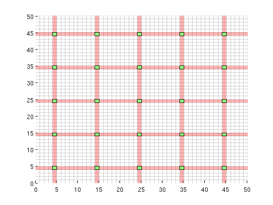
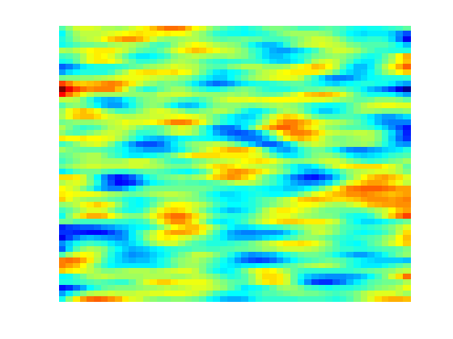
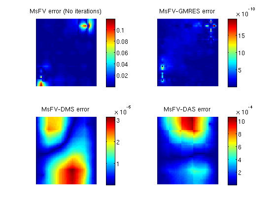
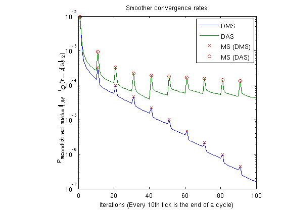
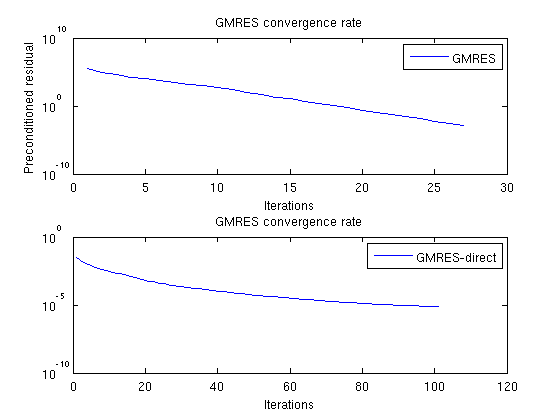

Multiscale Finite Volume Pressure solver: Iterative improvements
The Multiscale Finite Volume Method can be used in smoother-multiscale cycles or as a preconditioner for iterative algorithms. This example demonstrates this usage in preconditioned GMRES and Dirichlet Multiplicative / Additive Schwarz smoothing cycles.
Contents
- Iteration parameters
- Load required modules
- Define a simple 2D Cartesian grid
- Dual grid
- Permeability and fluid
- Add a simple Dirichlet boundary
- Add some wells near the corners
- State and tramsmissibility
- Solve the systems
- Plot error for the different configurations
- Plot smoother cycles
- Plot residuals for GMRES
- Check error
Iteration parameters
We will be doing 100 iterations in total, corresponding to 100 GMRES iterations and 10 cycles of 10 smoothings for the MsFV iterations. Omega is initially set to 1.
omega = 1; subiter = 10; iterations = 100; cycles = round(iterations/subiter);
Load required modules
mrstModule add coarsegrid msfvm
Define a simple 2D Cartesian grid
We create a  fine grid, and a coarse grid of $5 \times 5$ giving each coarse block  fine cells. We also add geometry data to the grids.
nx = 50; ny = 50; Nx = 5; Ny = 5; % Instansiate the actual grid G = cartGrid([nx, ny]); G = computeGeometry(G); % Generate coarse grid p = partitionUI(G, [Nx, Ny]); CG = generateCoarseGrid(G, p); CG = coarsenGeometry(CG);
Dual grid
Generate the dual grid logically and plot it.
DG = partitionUIdual(CG, [Nx, Ny]); % Plot the dual grid clf; plotDual(G, DG) view(0,90), axis tight
Permeability and fluid
We define a single phase fluid.
fluid = initSingleFluid('mu' , 1*centi*poise , ... 'rho', 1014*kilogram/meter^3); % Generate a lognormal field via porosity poro = gaussianField(G.cartDims, [.2 .4], [11 3 3], 2.5); K = poro.^3.*(1e-5)^2./(0.81*72*(1-poro).^2); rock.perm = K(:); clf; plotCellData(G, log10(rock.perm)); axis tight off;
Add a simple Dirichlet boundary
bc = []; bc = pside (bc, G, 'LEFT', .5*barsa()); bc = pside (bc, G, 'RIGHT', .25*barsa());
Add some wells near the corners
W = []; cell1 = round(nx*1/8) + nx*round(ny*1/8); cell2 = round(nx*7/8) + nx*round(ny*7/8); W = addWell(W, G, rock, cell1, ... 'Type', 'bhp' , 'Val', 1*barsa(), ... 'Radius', 0.1, 'InnerProduct', 'ip_tpf', ... 'Comp_i', [0, 1]); W = addWell(W, G, rock, cell2, ... 'Type', 'bhp' , 'Val', 0*barsa(), ... 'Radius', 0.1, 'InnerProduct', 'ip_tpf', ... 'Comp_i', [0, 1]);
State and tramsmissibility
Instansiate empty well and calculate transmissibility.
sol = initState(G, [], 0, [1, 0]); T = computeTrans(G, rock);
Solve the systems
We define an anonymous function because many parameters are common to each call tol solveMSFVM_TPFA_Incomp. This makes it easy to compare different parameters without duplicating code.
solvems = @(iterations, subiterations, iterator, smoother, omega) ... solveMSFV_TPFA_Incomp(sol, G, CG, T, fluid, 'Wells', W, ... 'Dual', DG, 'bc', bc,... 'Iterations', iterations,... 'Subiterations', subiterations,... 'Iterator', iterator,... 'Smoother', smoother,... 'Omega', omega, ... 'Verbose', false); disp 'Solving reference solution'; tic; solRef = incompTPFA(sol, G, T, fluid, 'bc', bc, 'wells', W); toc; disp 'Solving without iterations'; tic; solFV_noiter = solvems(0, 0, '', '', 0); toc; disp 'Solving with GMRES using MsFV preconditioner'; tic; solFV_gmres = solvems(iterations, 0, 'gmres', '', 0) ;toc; disp 'Solving with GMRES without preconditioner'; tic; solFV_direct =solvems(iterations, 0, 'gmres-direct', '', 0) ;toc; disp 'Solving with Dirichlet Multiplicative Schwarz (DMS) smoother cycles'; tic; solFV_dms = solvems(cycles, subiter, 'msfvm', 'DMS', omega);toc; disp 'Solving with Dirichlet Additive Schwarz (DAS) smoother cycles'; tic; solFV_das = solvems(cycles, subiter, 'msfvm', 'DAS', omega);toc;
Solving reference solution Elapsed time is 0.009063 seconds. Solving without iterations Elapsed time is 0.016270 seconds. Solving with GMRES using MsFV preconditioner Elapsed time is 0.132140 seconds. Solving with GMRES without preconditioner Elapsed time is 0.162605 seconds. Solving with Dirichlet Multiplicative Schwarz (DMS) smoother cycles Elapsed time is 1.538826 seconds. Solving with Dirichlet Additive Schwarz (DAS) smoother cycles Elapsed time is 0.931277 seconds.
Plot error for the different configurations
clf; subplot(2,2,1) % We plot the error scaled with total variation in the reference solution. variation = abs(max(solRef.pressure - min(solRef.pressure))); plotCellData(G, abs(solRef.pressure - solFV_noiter.pressure) ./ variation); view(0,90); axis tight off; colorbar; title('MsFV error (No iterations)') subplot(2,2,2) plotCellData(G, abs(solRef.pressure - solFV_gmres.pressure) ./ variation); view(0,90); axis tight off; colorbar; title('MsFV-GMRES error') subplot(2,2,3) % Plot error scaled with local variation plotCellData(G, abs(solRef.pressure - solFV_dms.pressure) ./ variation); view(0,90); axis tight off; colorbar; title('MsFV-DMS error') subplot(2,2,4) % Plot error scaled with local variation plotCellData(G, abs(solRef.pressure - solFV_das.pressure) ./ variation); view(0,90); axis tight off; colorbar; title('MsFV-DAS error')
Plot smoother cycles
We plot the preconditioned residuals for the smoother cycles. Note that the residual decreases monotonically within a smoother cycle, but jumps back up when a MsFV solution is comptuted. This is because the new multiscale solution is recomptued with source terms to get a better approximation than the last smoother cycle. The end of a cycle is marked in red.
clf; semilogy([solFV_dms.residuals; solFV_das.residuals]'); hold on title('Smoother convergence rates'); xlabel(sprintf('Iterations (Every %dth tick is the end of a cycle)', subiter)); ylabel('Preconditioned residual($\|M^{-1}Q(\tilde{r} - \tilde{A}\tilde{u}) \|_2$)','interpreter','latex') t_ms = 1:subiter:iterations; semilogy(t_ms, solFV_dms.residuals(t_ms), 'rx') semilogy(t_ms, solFV_das.residuals(t_ms), 'ro') legend({'DMS','DAS', 'MS (DMS)', 'MS (DAS)'});
Plot residuals for GMRES
The residuals of the preconditioned GMRES are not directly comparable to GMRES without preconditioner, but we can compare the number of iterations.
clf;subplot(2,1,1) semilogy([solFV_gmres.residuals]'); title('GMRES convergence rate'); legend({'GMRES'}); xlabel('Iterations'); ylabel('Preconditioned residual') subplot(2,1,2); semilogy([solFV_direct.residuals]'); title('GMRES convergence rate'); legend({'GMRES-direct'}); xlabel('Iterations');
Check error
Note that while the norms are different, the preconditioned GMRES converges while the direct GMRES does not. They both start with the same initial pressure solution. To see that the preconditioner ends up with a better result, we can compare the final pressure solutions:
disp 'With preconditioner:' reportError(solRef.pressure, solFV_gmres.pressure); disp 'Without preconditioner:' reportError(solRef.pressure, solFV_direct.pressure);
With preconditioner: ERROR: 2: 0.00000000 Sup: 0.00000000 Minimum 0.00000000 Without preconditioner: ERROR: 2: 0.00088122 Sup: 0.00069480 Minimum 0.00009498